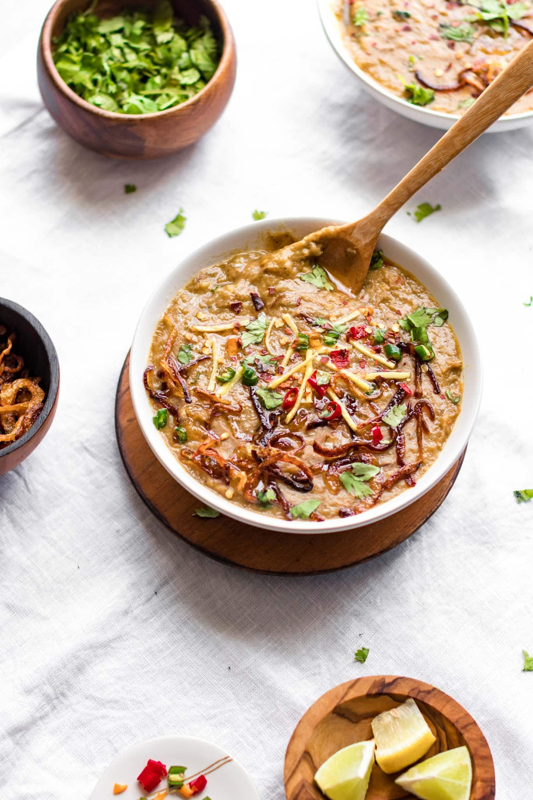
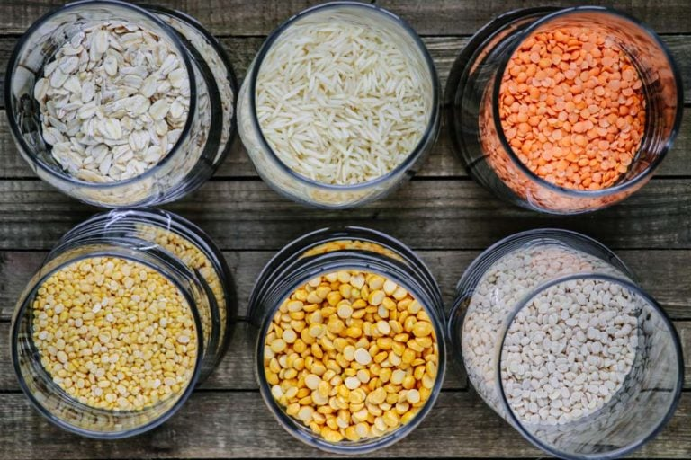

PAKISTANI HALEEM RECIPE (INSTANT POT)

Pakistani Haleem Recipe (Instant Pot)
This Pakistani-style Haleem recipe is authentic, full of classic flavor, and the perfect consistency...Yet easy to achieve in the Instant Pot.
INGREDINTS

- Lentils and Rice
- 1/4 cup chana dal raw split chickpeas or sub yellow split peas
- 1/4 cup maash dal split urad lentils
- 2 tbsp masoor dal red split lentils
- 2 tbsp split moong dal yellow lentils
- 2 tbsp basmati rice
Whole Spices
- 2-3 dried bay leaves
- 1-2 black cardamom pods
- 2-3 inch cinnamon stick
- 1 tsp cumin seeds
- 2-3 green cardamom pods leave whole or remove seeds and grind into a powder using a mortar and pestle
- 4-5 whole cloves leave whole or grind into a powder using a mortar and pestle
For the Instant Pot
- small onions or 1 large cut into eights
- 6 garlic cloves peeled
- 1 inch piece ginger peeled and roughly chopped
- 1/4 cup neutral oil such as grapeseed or canola
- 2 tbsp ghee
- 1 lb beef stew meat cut into 1 – 1 ½ inch cubes
- 2 medium tomatoes quartered
- 1-2 green chili peppers stems removed and sliced
- 1 tbsp haleem masala powder homemade (see post for recipe) or store-bought
- 1-2 tsp red chili flakes
- 3/4 tsp turmeric powder
- 2 1/2 - 2 3/4 tsp table salt or sea salt start with 2 1/4 tsp if using store-bought haleem masala
- 2 tbsp whole milk yogurt
- 3 cups water
After Cooking
- 1/4 cup rolled oats or sub instant oats
- 1/2 tsp garam masala or chaat masala
- 1/4 tsp freshly ground black pepper
- For the Tadka (Tempering) - Optional
- 1 small or half medium onion thinly sliced
- 2-3 tbsp ghee or oil
Garnishing
- 1/4 cup cilantro leaves finely chopped
- 1 inch ginger julienned
- 1-2 green chili peppers finely chopped
- 1 lemon or lime cut into wedges
- chaat masala or garam masala – optional
- mint leaves - optional
Instructions / Steps
medium bowl, combine the lentils and rice and rinse a few times until the water runs clear.
Fill the bowl with warm water and allow to soak. Set aside.
Place the onion, garlic, and ginger in a food processor and pulse to chop finely (but not blend).
Turn Instant Pot on Sauté mode and set to More/High. Once hot, add oil, ghee, and chopped onion mixture.
Sauté for about 8-10 minutes, until the onions are lightly golden.
While the onions are sautéing, add all the spices listed under Whole Spices.
Add the meat and sauté until the color of the meat changes (~5 minutes).
Meanwhile, pulse to chop the tomatoes and green chilies in the food processor. Set aside.
Add the spices (haleem masala, red chili flakes, and turmeric) and salt and sauté for 30 seconds.
Add the chopped tomato mixture and yogurt along with 3 cups of water.
Drain the soaked lentils and rice and add it to the Instant Pot.
Mix to combine.
Cancel Sauté.
Cover the Instant Pot and set the valve to Sealing.
Select the Meat/Stew Setting to set the pressure time to 45 minutes.
Allow the pressure to naturally release for at least 5 minutes, and then manually release the remaining pressure.
Open the pot, and use a slotted spoon and tong to remove the beef pieces and add them to the food processor.
Discard any large whole spices (the bay leaves, cinnamon stick, etc.) as they come up.
Pulse to process the beef until it is just shredded and stringy but not smooth (7-8 pulses).
(Alternatively, shred the beef in a stand mixer on low speed.)
Use an immersion blender to blend the dal until smooth. (You can also blend in the food processor after shredding the beef.)
Turn the Instant Pot on to Sauté mode and set to Less.
Add the shredded beef and rolled oats and stir.
Sauté for 3-5 minutes to cook this mixture down.
Once the haleem starts bubbling, cancel sauté and cover with a lid.
Select Slow Cook and set to More/High.
Allow to cook, stirring occasionally, for an additional 20-30 minutes
(See Note 1). The haleem is done once a 'laced' consistency is achieved.
(See Note 2) the haleem thickens too much, add 1/2-1 cup boiling water and continue to stir. Add the garam masala and black pepper and stir to mix.
Tadka (Optional Step)
In a medium skillet, heat ghee or oil over medium-high heat. Add the onions and sauté, stirring occasionally, until golden brown (~5-6 min). Stir more cautiously toward the end because you want them the deep brown color but not burnt.
Pour the tadka over the haleem. Garnish and serve with more garnishing on the side.
Notes
Note 1: I like to go back and forth between Sauté - Less and Slow Cook - More. If using Sauté - Less, stir constantly to prevent bubbling. If you have the time, I suggest letting it Slow cook - More even longer, up to 4 hours. Add water to thin out as necessary.
Note 2: If you lift your spoon and drop the haleem, it shouldn't drop like a soup or curry, but like a thick batter or paste with the shreds of the haleem lingering from the spoon.
Nutrition
Calories: 385kcal | Carbohydrates: 29g | Protein: 25g | Fat: 19g | Saturated Fat: 6g | Cholesterol: 61mg | Sodium: 68mg | Potassium: 515mg | Fiber: 8g | Sugar: 3g | Vitamin A: 495IU | Vitamin C: 10mg | Calcium: 82mg | Iron: 4mg